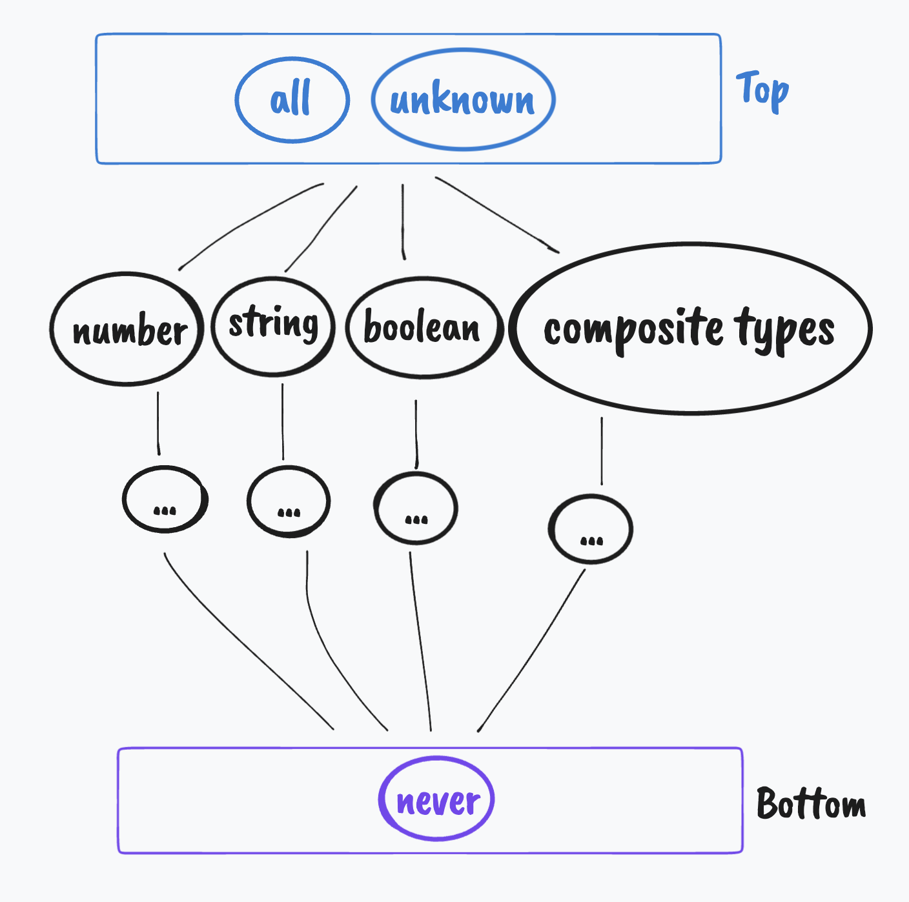

Thoughts, notes, and interesting external resources on TypeScript.
Without defining a constructor there is no way to check if a given
attribute (of actual type string) is in a certain object
(that is a member of some given class) if the object is empty.
TypeScript doesn’t include the properties of a class in the compiled
program; to check if a given prop is in a certain object type (in a
class definition one can say) you have to use an ad-hoc generated staple
object that is a member of this class — this way the constructor will be
called and it will initialize all the properties thus
Object.keys will not return an empty array but an array
with all properties initialized by the constructor.
Below is an example class with a constructor that initializes all class’ attributes.
class Example {
one: string;
two: number;
three: number[];
constructor() {
this.one = 'some';
this.two = 'example';
this.three = 'data';
}
}Now, to check if a given string is an attribute use:
if (attr in new Example) {
console.log(attr, 'is a property in `Example`');
}If the constructor isn’t defined in the
Example class, the condition in the above if
statement will always reject any string property.
To allow creating objects with custom initializing values you could
improve constructor by adding an optional argument:
constructor(example: Partial<Example> = {}) {
this.one = example.one || 'some';
this.two = example.two || 'example';
this.three = example.three || 'data';
}This way you could create a new instance of this class with some
custom parameters. However, this argument is optional so it can be
omitted: new Example().
It is important to note that defining the argument as optional using
the ? symbol won’t work.
constructor(example?: Partial<Example>) {...}If the constructor is defined as above then creating a
new object (new Example()) will result in an error of a
TypeError:
TypeError: Cannot read property '...' of undefinedas the argument object hasn’t been provided.
Setting the default value to {} resolves this
issue.
An obscure issue, but still a valuable one to consider.
We have two classes of which one is derived from the other:
class Base {
one: string;
constructor() {
this.one = 'data';
}
}
class Derived extends Base {
two: number;
constructor() {
super();
this.two = 27;
}
}an instance of the Derived class:
const object: Derived = new Derived();We want to extract properties that are defined by Base
class from this object and remove all that are defined by
the Derived class. In this case we want to get an object
with only the one property.
const objectExtracted: Base = new Base();The first solution would be to loop through all properties of the
object properties and assign all values to properties that
exist in objectExtracted’s type which is the
Base class.
We need to define a predicate function that states whether a given string property name is an actual property name:
class Base {
...
public static hasKey(val: any): val is keyof Base {
return val in new Base();
}
}This function creates a staple instance of the Base
class that contains all of its properties (it is important to define a
proper constructor for this class — more here) and checks
whether the provided string is an actual object key.
However, the following code isn’t enough:
for (const prop in object) {
if(Base.hasKey(prop)) {
objectExtracted[prop] = object[prop];
}
}as it will bring up an error that some type can’t be cast to the type
“never”. This type exists because of uncertainty which type
should be used here when accessing a property of
objectExtracted.
The solution is to define a function which extracts a given property from one object to another whilst at the same time being type-safe:
export function ExtractProperty<T1, T2 extends T1, K extends keyof T2>(
target: T1, source: T2, property: K, hasKey: (val: any) => val is keyof T1): void {
if (hasKey(property)) {
target[property] = source[property];
}
}This function assigns the property value from the source
object to target only if target has a property
of the same name. This function requires using a predicate which makes
sure the object keys are handled properly.
This function essentially moves the problem to an abstract level at which it resolves the type uncertainty issue.
Now, we can rewrite our loop:
for (const prop in object) {
if(Base.hasKey(prop)) {
ExtractProperty(objectExtracted, object, prop, Base.hasKey);
}
}so it uses the ExtractProperty function.
void, null, etc.TypeScript introduces a set of rules that define relationships between all types found in the language.

The main spine of the type relations tree.
Apart from the “truthy” values, there are also “negative” values in JS. TypeScript introduces a few more of these and also establishes a set of relations between all of them.
any |
unknown |
object |
void |
undefined |
null |
never |
|
|---|---|---|---|---|---|---|---|
any |
Y | Y | Y | Y | Y | N | |
unknown |
Y | N | N | N | N | N | |
object |
Y | Y | N | N | N | N | |
void |
Y | Y | N | N | N | N | |
undefined |
Y | Y | Y’ | Y | Y’ | N | |
null |
Y | Y | Y’ | Y’ | Y’ | N | |
never |
Y | Y | Y | Y | Y | Y |
strictNullChecks is turned
offThe table of relations between various “negative” values in TS. It shows types of variables (columns) that accept types of values (rows).
Think of types as sets of possible values they can contain. Languages in a mathematical sense.
For example the never type is the equivalent of an
empty set
(),
an empty language that has no words.
The any type on the other hand is a language that
contains every possible value, the domain of
the variable system, for any variable
that can be represented in TypeScript,
any. An equivalent of a RegEx expression that accepts any
character that repeats an unlimited number of times
(.*).
Type combination works just like operations on sets.
ts type C = A & B
ts never & A // resolves to `never`.ts type C = A | B
ts never | A // resolves to `A`.Sources:
never typeinferThe infer is used for extracting a type that is not
directly available or has an importable definition.
For example, when a function f expects an argument of
certain type T, and this type T has not been
marked for export in this function f’s module, use
infer to extract type T.
import { f } from 'module'
type T = typeof f extends (arg: infer T) => any ? T : never
const x: T = {
one: 21,
two: 37,
}
// […]
f(x) // no type errorsThis way you can extract the exact type given function expects. The source article presents an example that benefits greatly from this functionality.
Because
x: number[]and
y: [number, number]do not have equal types, one x cannot be accepted as an
y substitute.
Thus
const g = (x: {a: [number, number]}) => x.a[0] + ', ' + x.a[1]
const a = [2137, 1448]
g({a})generates an error.
TS2322: Type 'number[]' is not assignable to type '[number, number]'.
Target requires 2 element(s) but source may have fewer.The key word here is “may” — another example of TS’s great type-safety system.
Source article: Understanding
infer in TypeScript